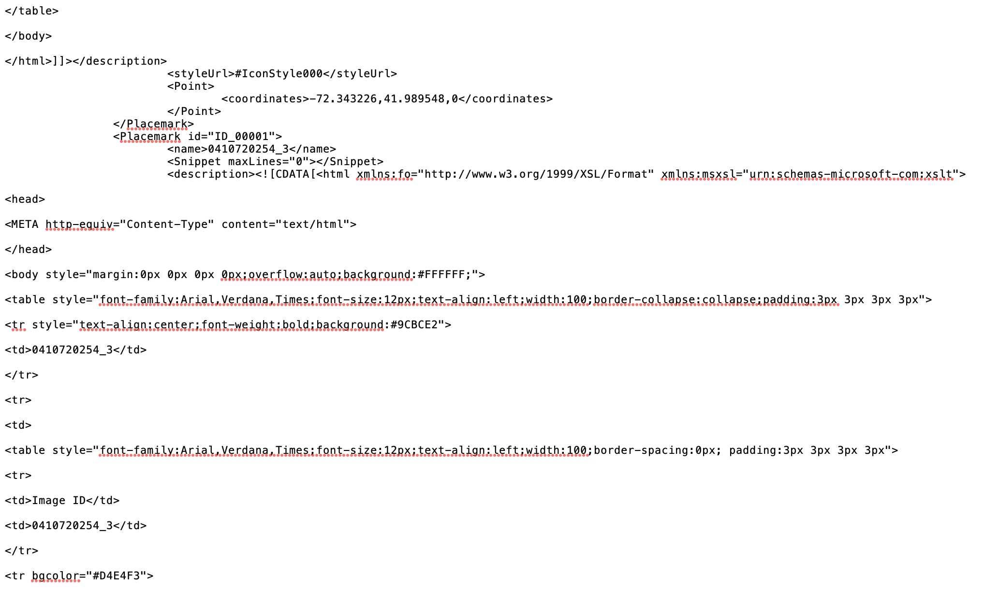

Retrieving Historical Aerial Photography
November 29, 2019
What?
Hap.py is a python program I wrote which accepts a Connecticut state address and returns all available aerial photography over that location.
Why?
The first implementation of hap.py was written during the summer of 2019 while I was an intern at RACE Coastal Engineering. Historical photography is very important to Engineering companies: It gets used for everything from permiting to assembling bidding packages. Unfortunatly the interactive maps hosted by UConn MAGIC (Map and Geographic Information Center), were (are?) broken. I took it upon myself to write a program which would accept an address and return the associated aerial photography.
While on winter break I thought it would be a good idea to expand on my idea and create a way for anyone to access historical photography.
How? (technical brief)
Parsing .kml files, creating a list of tuples:
If you want the long version, read on!
If you just want to look at the code, view on Github.
History & KML Parsing
What is a kml file?
According to the Google developer documentation, "KML is a file format used to display geographic data in an Earth browser such as Google Earth."
An example is shown below.

Another project of mine (also at RACE) was creating kml polygonal heatmaps from lists of

This heatmap program was heavily inspired by Mark Polczynski and Michael Polczynski's paper: A Microsoft VBA Application for Generating Heat Maps, in which they analyze the 17th century frontier between the Polish/Lithuanian Commonwealth and the Ottoman Empire. I reimplemented their algorithm in python for increased speed and flexibility.
In both cases the steps are the same:
- Generate a grid of geographical regions
- Calculate a `g` grid attribute value for each square
- Build KML polygon layer, coloring squares accoridng to their `g` values
Each 'square' has a `g` value defined as:
Where `N` is the number of squares on the map, `p_{j}` is a constant denoting the weight of the point (in the case of the heatmap `p_{j} = 1`), `d_{ij} ` is the distance between the center of the square and the set of coordinates, and `r^{2}` is what the paper calls the grid range which changes the look of the heatmap.
Eventually this will be given proper treatment, for now it serves to illustrate the power of KML. There are myriad improvements which could be done to my program (a kdtree for starters).
We have seen how KML files look when opened with Google earth, but what do these files look like on a more fundamental level?
Below is a screenshot of an average KML file opened with the MacOS TextEdit program.
Again quoting from Google here: "KML uses a tag-based structure with nested elements and attributes and is based on the XML standard. All tags are case-sensitive and must appear exactly as they are listed in the KML Reference. The Reference indicates which tags are optional. Within a given element, tags must appear in the order shown in the Reference."
Why are we talking about KML files?
As I stated above the interactive maps hosted by UConn MAGIC are broken, yet the KML files which serve as the source material for them are free and easily available. To create a program which can retrieve histroical photography we must first extract pertinent information from these files.
The UConn MAGIC site contains 11 aerial photography surveys of the state, and 3 at a county level:
- 1957: Middlesex Counties
- 1963: Tolland, New London, and Windham Counties
- 1969: New London, Tolland and Windham Counties
This program will focus on the statewide surveys. The reduction process for each state survey KML file is detailed below.
1934
1952
1965
1970
1986
1990
1995
2004
2006
2008
2010
Next Steps
There are a ton of ways to expand upon this. I list some of these below:
- Setting up the Raspberry Pi. Eventually I would like to run these bots off of my raspberry pi for 24/7 uptime.
- Improved web interface. I happen to be a very poor web developer. I would love to see what a real developer could do with this idea. Interactive maps?
- Historical flight simulator. Google earth includes a flight simulator mode! The images could be downloaded en masse, stitched togehter, and overlayed onto google earth and released as a .kml file.
- Better KML parsing with pyKML. Pretty self explanatory. The pyKML package provides better tools to parse .kml files. Using this library would be much better than using my 'spit-and-prayers' parsing tools.